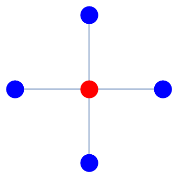

8. Dirichlet conditions¶
The cases where we are given conditions to imposed on two different boundaries are more tricky. In 1D problems the problem can be solved by setting up a matrix system of equations for each node. This approach can be generalised to higher dimensions, but it becomes challenging to implement.
for instance by using a “shooting” technique, or an approach based on simultaneous equations, or an iterative algorithm. These approaches will be described in SECTION.
Examples:
Worked example: 1D heat equation
Worked example: 2D heat equation
Plate:
\(\phi=300\) (Left,Right)
\(\phi=400\) (Top,Bottom)
8.1. Problem 2 : 1D heat equation with Dirichlet boundary conditions¶
n=100
x = np.linspace(0,1,n).T
h = x[1]-x[0]
f = lambda x: sin(2*pi*x)
A = np.diag([-2]*n,0)+np.diag([1]*(n-1),1)+np.diag([1]*(n-1),-1)
A[0,[0,1]]=[1,0]
A[n-1,[n-2,n-1]]=[0,1]
F =[f(a) for a in x]
F[0]=0
F[len(F)-1] = 0
U = [h**2*a for a in np.linalg.lstsq(A,F,rcond=None)[0]]
sol = [-sin(2*pi*a)/(4*pi**2) for a in x]
fig,ax = plt.subplots(1,2)
ax[0].plot(x,U)
U = np.array(U)
sol = np.array(sol)
ax[1].plot(x,abs(U-sol))
plt.show()
---------------------------------------------------------------------------
NameError Traceback (most recent call last)
<ipython-input-1-ec000f1f5fa5> in <module>
1 n=100
----> 2 x = np.linspace(0,1,n).T
3 h = x[1]-x[0]
4
5 f = lambda x: sin(2*pi*x)
NameError: name 'np' is not defined
8.2. Axially symmetric heat flow¶
The image below shows a cross-section of pipe insulation, which is subjected to temperatures \(\phi=500K\) on the inner boundary and \(\phi=300K\) on the outer boundary. The radial and axial directions are denoted by \(r,\theta\), respectively.

Due to axial symmetry of the problem, the governing two-dimensional heat equation \(\nabla^2\phi=0\) for this problem can be reduced to
Exercise 8.1
Express equation (8.1) in finite difference form, using a central difference scheme, and apply a Gauss-Seidel relaxation technique with 11 radial points to determine the solution \(\phi(r)\) for \(r\in[0.05,0.10]\) to within \(10^{-4}\).
Graphically compare your answer to the analytic solution, which is given by
Solution The equation can be written out using the central differences formula as:
which rearranges to
This can be applied as follows
n=11; % We are using 11 points
r = linspace(0.05,0.10,n); h =r(2)-r(1); % Construct the radial coordinate
%Set up the initial grid :
F = 400*ones(1,n); % The temperature average is a suitable choice
F(1)=500;F(end)=300; % Enforce boundary conditions
for j = 1:200 %Limit to 200 iterations
Fcheck = F; %To check for convergence
for k=2:n-1 %On interior points
F(k) = ((r(k)-h/2)*F(k-1)+(r(k)+h/2)*F(k+1))/2/r(k);
end
if norm(Fcheck-F)<10^-4
fprintf('Converged after %d iterations,',j)
break
end
end
In this case we are able to compare to the analytic solution obtained by integrating the ODE by hand:
figure
subplot(1,2,1);plot(r,F);
title('estimated solution');xlabel('x');xlim([0.05,0.1]);
a=-200/log(2); b=500-200*log(20)/log(2);
Fanalytic= a*log(r)+b;
subplot(1,2,2);plot(r,abs(F-Fanalytic))
title('error');xlabel('x');xlim([0.05,0.1]);
8.3. 1D diffusion¶
Enceladus is a small, icy moon of Saturn, which has been observed to emit molecules of water from “cracks” in its surface. The following differential equation represents the competition between outward diffusion of water molecules from the surface and destruction due to ionization:
In this equation, \(r\) is the radial distance from the centre of the moon, \(c\) is the steady state concentration of water molecules, and \(\beta_{LOSS}\) represents the relative importance of ionization compared to diffusion. We will take
Write down a discretised form of these equations, using a central difference scheme.
Solve the discretised system with 50 grid points simultaneously using a matrix method.
Solve the discretised system with 50 grid points using a Gauss-Seidel technique. Determine the number of iterations required for agreement with your part (2) solution to within \(10^{-4}\).
Solution
Part 1: Discretisation
We can also eliminate a factor of \(\frac{r_i}{\Delta r^2}\) to give:
Part 2: Matrix method
Grouping together terms gives (for example):
n=50; bloss=0.01; % Values defined in the question
r=linspace(1,50,n); % Set up the radial coordinate
hr=r(2)-r(1); % Determine the grid spacing
M = zeros(n,n); % Construct the grid
% CONSTRUCTION OF COEFFICIENTS FOR INTERIOR NODES
for k=2:n-1
M(k,k-1)=(r(k)-hr);
M(k,k)=-(2*r(k)+bloss*hr^2*r(k));
M(k,k+1)=(r(k)+hr);
end
% alternative approach using diag:
% rint = r(2:n-1);
% diag(rint-hr,-1)+diag([1,-2+bloss*hr^2*rint,1]) + diag(rint+hr,1)
% CONSTRUCTION OF COEFFICIENTS FOR BOUNDARY NODES
M(1,1)=1; M(end,end)=1;
% CONSTRUCTION OF RHS
b=zeros(n,1);b(1)=1;b(n)=0.1; % interior + boundary
sol1=(M\b).';
Part 3: Gauss-Seidel method
% Set up an initial grid for the solution
c=zeros(1,n); c(1) = 1; c(end)=0.1;
for j=1:1000 %bound on maximum number of iterations
for k=2:n-1
c(k) = ((r(k)+hr)*c(k+1) +(r(k)-hr)*c(k-1))/(2*r(k)+bloss*hr^2*r(k));
end
if norm(c-sol1)<1e-4
fprintf('Converged after %d iterations,',j)
break
end
end
% Plots
figure
subplot(2,1,1)
plot(r,sol1,'b')
title('Solution by Matrix method')
subplot(2,1,2)
plot(r,c,'r')
title('Solution by Gauss-Seidel method')
8.3.1. Illustration of approach using simultaneous equations¶
Consider a rectangular plate, with temperature \(\phi(x,y)\) described by the steady heat equation \(\nabla^2\phi = 0\). The plate is maintained at boundary temperatures \(\phi = 300, 400\) on pairs of opposite edges as shown. We will solve this problem using a central finite difference scheme on a (3 × 3) grid of interior points.

The governing equation can be discretised using a five-point stencil:
There is one equation for each node (equation variable), so we number the nodes sequentially \(\phi_{1,...9)\) as illustrated, resulting in the following system of equations :
Notice that as a consequence of reshaping the array of node values into a column it has become slightly harder to keep track of the nodes that are neighbours. Additionally, inverting the sparse coefficient matrices can be computationally impractical for problems with many nodes. We therefore introduce an alternative, below.
8.3.2. Relaxation Method¶
We begin by rearranging the governing finite difference formula into the form $\(u=F(u).\)$ For instance, for the five-point formula given in the previous example, we may write
The solution of this system can be found iteratively, by starting with a suitable initial guess for the whole field \(u\) and applying the formulas until (hopefully!) a fixed solution is determined. This is known as jacobi iteration. To speed up convergence, the iterations can be applied sequentially to each grid-point; for example by sweeping from top-left to bottom right of the domain and updating each grid point in turn. This technique is known as the Gauss-Seidel relaxation method.\
A less obvious improvement in the technique, known as sucessive relaxation, starts with the observation that in each update step we obtain a relationship of the form
where \(r_{i,j}\) is the residual error. The proposal allows that faster convergence might be obtained by adjusting the update step in proportion to the size of the residual, which is supposed to converge to zero:
The relaxation parameter \(\gamma\) is selected for faster convergence, with
\(\gamma>1\) over-relaxation,
\(\gamma=1\) gives the ordinary GS method,
\(\gamma<1\) under-relaxation.
It is very difficult to predict the optimum value of \(\gamma\), but values in the range \((1,2)\) typically work well.\
An example implementation of the Jacobi, Gauss-Seidel and SOR techniques is given below.
8.3.3. Example implementation of the Jacobi, Gauss-Seidel and SOR techniques in python¶
Aim: solving \(u^{\prime\prime}(x) = sin(2\pi x)\) for \(u(0) = u(1) = 0\)
# Importing the relevant packages for the example
import numpy as np
from math import sin,pi, sqrt
import matplotlib.pyplot as plt
from numpy.linalg import eig, norm
# Setting the grid space
n = 50
x = np.linspace(0,1,n+1)
h = x[1] - x[0]
Matrix method
M = np.diag(np.insert(-2*np.ones((1,n-1))[0],(0,n-1),(1,1))) \
+ np.diag(np.append(np.ones((1,n-1))[0],0), -1) + \
np.diag(np.insert(np.ones((1,n-1))[0],0,0),1)
k = [h**2*sin(2*pi*a) for a in x]
umatr = np.linalg.lstsq(M,k,rcond=None)
# Plot of matrix solution
plot_obj = plt.plot(x,umatr[0],'rx', x,[-sin(2*pi*a)/4/pi**2 for a in x],'b')
plt.legend(plot_obj, ('estimate','analytic'))
plt.xlim((0,1))
plt.show()
Define the SOR parameter The optimum parameter for Successive Over-Relaxation (SOR) can be predicted.
C = np.eye(n+1) - np.linalg.lstsq(np.diag(np.diag(M)), M, rcond=None)[0]
m = max(abs(eig(C)[0]))
sor = 1+m**2/(1+sqrt(1-m**2))**2
Iterative methods Let us first define the functions for the Jacobi, Gauss-Seidel and SOR algorithms. You can find them hidden below.
def jac(u0,k):
# Jacobi Iteration
u1 = np.insert((u0[2:]+u0[:-2]-np.reshape(k[1:-1],np.shape(u0[:-2])))/2, (0,len(k[1:-1])), \
(u0[0], u0[-1]))
return u1
def gsl(u0,k):
# Gauss-Seidel iteration
for i in range(1,len(u0)-1):
u0[i] = (u0[i-1]+u0[i+1]-k[i])/2
return u0
def rlx(u0,k,g):
# Relaxation method using relaxation parameter g
for i in range(1, len(u0)-1):
u1 = (u0[i-1]+u0[i+1]-k[i])/2
u0[i] = u0[i] + g*(u1-u0[i])
return u0
def iterate(testfun, u0, maxit, accgoal):
# Iterate until converged to within specified accuracy
for counter in range(int(maxit)):
uref = np.copy(u0)
unext = testfun(u0)
err = norm(unext-uref)
if err<accgoal:
print('converged after', counter, 'iterations')
break
u0 = unext
return unext
# Initialize grid for iterative method
u0 = np.zeros((n+1,))
# Jacobi method
ujac = iterate(lambda u: (jac(u,k)),u0,1e3,1e-5)
# Gauss-Seidel
ugsl = iterate(lambda u: gsl(u,k),u0,1e3,1e-5)
8.4. 2D heat equation with Dirichlet conditions¶
We will consider the problem
By applying the second derivative central difference formula at the interior points:
we obtain
This is known as the five-point formula. It can be represented using a stencil:

{kind=link}
The equation rearranges to the following iterative formula:
Step 1: Solve the problem using an iterative solution technique, for the case where:
subject to the conditions
Step 2: Compare your solution to the analytic result, which is given by
Step 3: Solve the problem using an iterative solution technique, for the case where:
subject to the conditions
Hint: to enforce the Neumann boundary conditions, you can use the first order central differences approximation
The expressions to enforce these conditions at the boundary are given in terms of the result at nodes outside the boundaries. We can construct the required ``fictitious’’ nodes and remove them from out solution at the end.
Part 1:
clear
% This is the RHS of the equation
f=@(x,y)(2-pi^2*(1+x).^2).*cos(pi*y);
% set up the grid
n=30;
x = linspace(0,1,n); y = linspace(0,1,n);
% Useful to store f(x,y) in an array and use F(i,j) instead of f(x(i),y(k))
[X,Y]=meshgrid(x.',y.'); F=f(X,Y);
% determine grid size
h =x(2)-x(1);
% to hold the solutions
U = zeros(n,n);
% enforce boundary conditions
U(1,:) = (1+x).^2; U(end,:)=-(1+x).^2;
U(:,1) = cos(pi*y); U(:,end)=4*cos(pi*y);
%relaxation parameter is r=1 for Gauss-Seidel.
% You could try some higher values for relaxation.
r=1;
[n,m] = size(U);
for k = 1:300 %for each sweep
for i = 2:n-1
for j = 2:m-1
Unew = (U(i-1,j)+U(i+1,j)+U(i,j-1)+U(i,j+1))/4-h^2/4*F(i,j);
U(i,j) = U(i,j)+r*(Unew-U(i,j));
end
end
end
% compare to analytic results
T = (1+X).^2.*cos(pi*Y);
figure
subplot(1,2,1)
surf(x,y,T);title('Exact')
subplot(1,2,2)
surf(x,y,abs(U-T));title('Gauss-Seidel error')
Part 2:
% This is the RHS of the equation
f=@(x,y)(-5*sin(3*pi*x).*cos(2*pi*y));
% set up the grid
n=30;
x = linspace(0,1,n); y = linspace(0,1,n);
[X,Y]=meshgrid(x,y);
F=f(X,Y);
% determine grid size
h =x(2)-x(1);
% the solution grid is padded with fictitious nodes to remove at the end
U = zeros(n+2,n+2);
% we need to pad F as well, so that the two grids are not mismatched
F=padarray(F,[1,1]);
r=1;%relaxation parameter is 1 for Gauss-Seidel
[n,m] = size(U);
for k = 1:500 %for each sweep
%enforce boundary conditions on fictitious nodes
U(1,:)=U(3,:); U(n,:)=U(n-2,:);
U(:,1)=U(:,3); U(:,m)=U(:,m-2);
for i = 2:n-1
for j = 2:m-1
Unew = (U(i-1,j)+U(i+1,j)+U(i,j-1)+U(i,j+1))/4-h^2/4*F(i,j);
U(i,j) = U(i,j)+r*(Unew-U(i,j));
end
end
end
figure
surf(x,y,U(2:end-1,2:end-1));
Note: If \(\phi_{sol}\) is a solution of this problem, which satisfies the boundary conditions, then \(\phi_{sol}+C\) is also a solution. Hence, it is possible for the surface to appear shifted up or down in your answers.
Alternatively, using a simultaneous equations technique
The function cdiffM below was written to solve the Poisson problem
using a matrix method for any possible combination of boundary conditions. The function sets up the coefficient matrix for the problem \(A\Phi=F\), where \(F,Phi\) are the function value and unknown solution at each grid node \((x,y)\), arranged as vectors. Array \(A\) is the (sparse) coefficient matrix that relates each node to its neighbours using the five-point formula. The boundary equations are modified to use any specified boundary conditions.
%% Question 1
% set up the grid
n=30;
x = linspace(0,1,n); y = linspace(0,1,n); [X,Y]=meshgrid(x,y);
%determine grid size
h =x(2)-x(1);
% RHS with enforced boundary conditions
F = h^2*(2-pi^2*(1+X).^2).*cos(pi*Y);
F(1,:) = (1+x).^2; F(end,:) =-(1+x).^2;
F(:,1) = cos(pi*y); F(:,end) =4*cos(pi*y);
F = F(:); % convert to a list
% LHS with enforced boundary conditions
U = cdiffM(n,{'dirichlet','dirichlet','dirichlet','dirichlet'},F);
% compare to analytic results
U_exact = (1+X).^2.*cos(pi*Y);
figure; surf(x,y,U);
%% Question 2
n=30;
x = linspace(0,1,n).'; y = linspace(0,1,n).'; [X,Y]=meshgrid(x,y);
%determine grid size
h =x(2)-x(1);
% RHS with enforced boundary conditions
F = h^2*(-5*sin(3*pi*X).*cos(2*pi*Y));
F = padarray(F,[1,1],0);
F = F(:); % convert to a list
% LHS with enforced boundary conditions
U = cdiffM(n,{'neumann','neumann','neumann','neumann'},F);
figure; surf(x,y,U);
function U = cdiffM(n,LRUD,F)
% Construct the coefficient matrix for (nxn) implementation of central
% difference formula, with dirichlet or neumann boundary conditions, and
% solve for given forcing
%
% INPUTS
% n : dimensions of grid
% LRUD : cell array of left, right, up, down boundary types
% (e.g. {'neumann','neumann','neumann','neumann'}
% F : RHS of equation
%
% OUTPUTS
% U : solutions
m = n;
% Introduce fictitious nodes at any neumann boundaries
if strcmpi(LRUD{1},'neumann'), m=m+1; end
if strcmpi(LRUD{2},'neumann'), m=m+1; end
if strcmpi(LRUD{3},'neumann'), n=n+1; end
if strcmpi(LRUD{4},'neumann'), n=n+1; end
nodes = reshape(1:n*m,n,m); % number the nodes in our (n x m) domain
i = 2:n-1; j = 2:m-1; % location of interior nodes
% nodes and neighbours in five-point formula
C = nodes(i,j);
L = nodes(i,j-1); R = nodes(i,j+1);
U = nodes(i-1,j); D = nodes(i+1,j);
% order the five-point indices as a list
idx = [D(:), L(:), C(:), R(:), U(:)];
% construct the array by looping over the rows
M = zeros(n*m); for k=1:numel(C), M(C(k),idx(k,:)) = [1 1 -4 1 1]; end
%% apply boundary conditions
% left boundary
if strcmpi(LRUD{1},'neumann')
M = neumann(M,nodes(:,1:3),[-1,1]);
else
M = dirichlet(M,nodes(:,1));
end
% right boundary
if strcmpi(LRUD{2},'neumann')
M = neumann(M,fliplr(nodes(:,end-2:end)),[1,-1]);
else
M = dirichlet(M,fliplr(nodes(:,end)));
end
% upper boundary
if strcmpi(LRUD{3},'neumann')
M = neumann(M,nodes(1:3,:).',[-1,1]);
else
M = dirichlet(M,nodes(1,:).');
end
% lower boundary
if strcmpi(LRUD{4},'neumann')
M = neumann(M,fliplr(nodes(end-2:end,:).'),[1,-1]);
else
M = dirichlet(M,nodes(end,:).');
end
%% solve the system
U = reshape(M\F,n,m);
% cut off any fictitious nodes that were introduced
if strcmpi(LRUD{1},'neumann'),U(:,1)=[];end
if strcmpi(LRUD{2},'neumann'),U(:,end)=[];end
if strcmpi(LRUD{3},'neumann'),U(1,:)=[];end
if strcmpi(LRUD{4},'neumann'),U(end,:)=[];end
end
function M = dirichlet(M,C)
% Apply dirirchlet boundary conditions at nodes numbered in vector C
for k = 1:numel(C), M(C(k),C(k)) = 1; end
end
function M = neumann(M,idx,coeffs)
% Apply neumann boundary conditions at nodes idx = [L C R] or [U C D].
for k = 1:size(idx,1), M(idx(k,1),[idx(k,1),idx(k,3)]) = coeffs; end
end
8.4.1. Neumann¶
Examples
Uses fictitious nodes at each end (give single example)
8.4.2. new section¶
Schr”{o}dinger equation